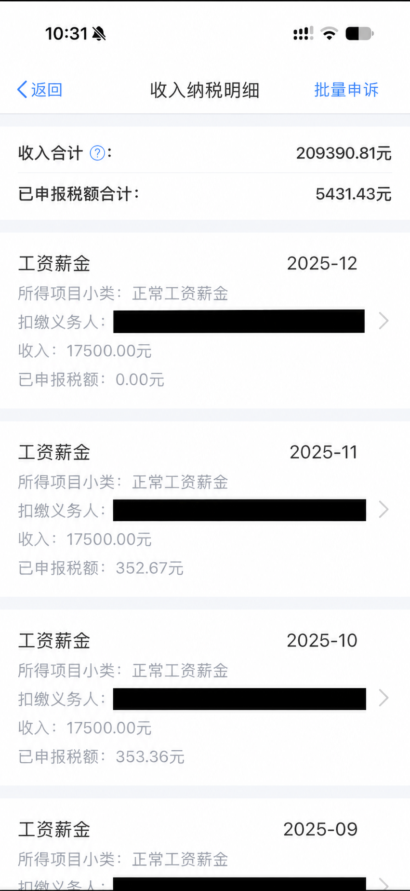
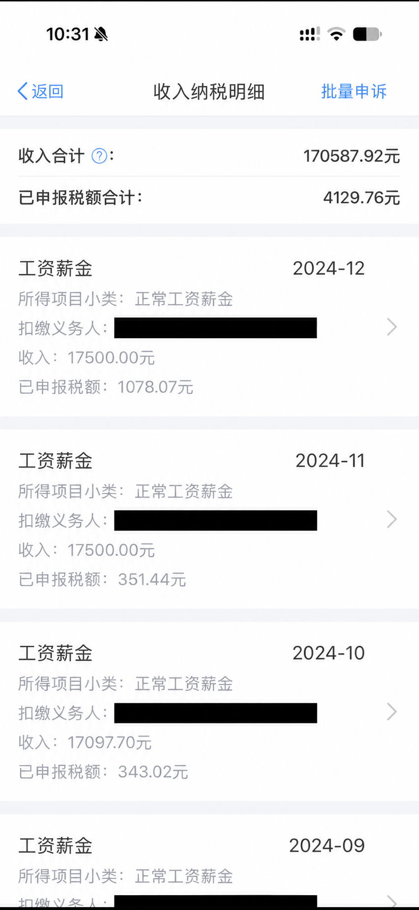
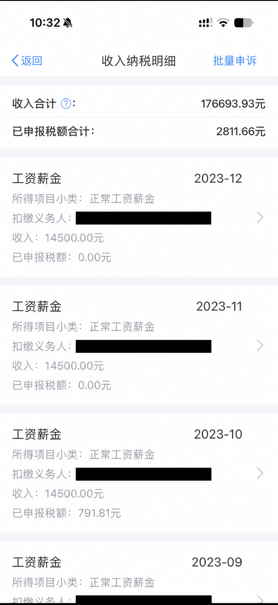
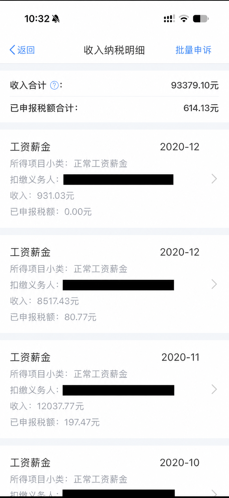

把六张收入明细上的“收入合计”相加，是1061709.20元，约106.17万元。
看到这个数字，你第一反应是什么？是“赚得还可以”，还是“那应该存下不少吧”？
公司信息已遮盖。我自己的存款这次不公开，想把问题抛给大家：你们存了多少钱了。
先把口径说清楚：图上显示的是收入明细，不能把这个合计数当成到手收入，更不能当成现在的存款。存了多少，还要看这些钱后来去了哪里。
比如，一个人把钱付了首付，手头余额不多；另一个人没有买房，账户里保留着钱。只拿银行卡余额来比较，很容易忽略前面已经做过的选择。
再比如，一个人收入要用于自己的生活，另一个人还需要帮家里，单看工资也很难解释两人的存款差距。
我觉得，“你存了多少”真正值得聊的地方，是这个数字背后的去向：哪些钱解决了问题，哪些钱让人后悔，哪些花销每个月都会来，想躲也躲不开。
这个问题，可能比单纯报余额更容易有分歧。
付了首付的人，可能会觉得自己这些年的积累已经放进房子里了。手里留着现金的人，也可能更看重随时能用钱的方便。
但房子和手头现金的用途不同，如果还有贷款要继续还，情况又多了一层。聊天时最好把口径说明白，别把“手头的钱”“房子”和“欠款”混在一个数字里。
我也不想拿一个余额给人下结论。说自己没多少存款的人，可能刚还完一笔债；说自己攒下一笔钱的人，也有可能在其他地方省了很久。
聊存钱时，经常听到一句话：钱到底去哪了？
有些钱能很快想起来，房租、吃饭、交通，或者一次大的家庭支出。有些钱则被拆在很小的付款里，等回头看，才发现加在一起也不少。
把所有支出都说成必要，未必诚实；把所有没有变成余额的钱都说成白花了，也未必公平。
具体到一笔钱，问题反而好回答一些：如果重新选择一次，你还愿不愿意花？
愿意聊的，可以在评论里留个大致区间：还在还债、1万以内、1—5万、5—10万、10—30万、30万以上。
不想说金额，也可以只回答两个问题：你最难省下来的是哪种开销？这几年花得最值得的一笔钱是什么？
如果已经买房，或者还有贷款、欠款，也可以自愿补充一句。把处境说清楚，比只摆一个数字更有意思。
图片说明：六张收入明细由用户提供，公司信息已遮盖；文中合计仅为图示金额相加，不代表实际到账、存款或净资产。

2025年明细，公司信息已遮盖。

2024年明细，公司信息已遮盖。

2023年明细，公司信息已遮盖。
2022年明细，公司信息已遮盖。
2021年明细，公司信息已遮盖。

2020年明细，公司信息已遮盖。